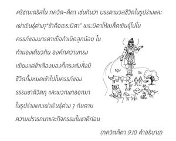
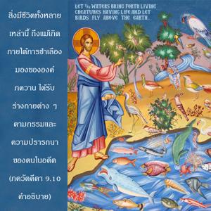

ธรรมชาติวัตถุซึ่งเป็นหนึ่งในพลังงานอันหลากหลายของข้านี้ ทำงานภายใต้คำสั่งของข้าได้ผลิตมวลชีวิตทั้งเคลื่อนไหวได้และเคลื่อนไหวไม่ได้ โอ้ โอรสพระนาง กุนฺตี ภายใต้กฎของตัวมันเองนั้น ปรากฏการณ์แห่งการสร้างและการทำลายนี้เกิดขึ้นครั้งแล้วครั้งเล่า


ได้กล่าวไว้อย่างชัดเจนตรงนี้ว่าองค์ภควานฺนั้นถึงแม้จะทรงอยู่ห่างจากกิจกรรมของโลกวัตถุทั้งหลายเหล่านี้ก็ยังทรงเป็นผู้กำกับสูงสุด ทรงเป็นผู้ปรารถนาสูงสุด และทรงเป็นเบื้องหลังของปรากฏการณ์ทางวัตถุนี้ แต่การบริหารดำเนินไปโดยธรรมชาติวัตถุ องค์กฺฤษฺณก็ทรงตรัสใน ภควัท-คีตา เช่นกันว่าในบรรดามวลชีวิตในรูปร่างและเผ่าพันธุ์ต่างๆนั้น “ข้าคือพระบิดา” พระบิดาให้เมล็ดพันธุ์ไปในครรภ์ของมารดาเพื่อกำเนิดลูกน้อย ในทำนองเดียวกันองค์ภควานฺทรงเพียงแต่ชำเลืองมองก็ทรงส่งสิ่งมีชีวิตทั้งหมดเข้าไปในครรภ์ของธรรมชาติวัตถุ และพวกเขาได้ออกมาในรูปร่างและเผ่าพันธุ์ต่างๆตามความปรารถนาและกิจกรรมในชาติก่อน สิ่งมีชีวิตทั้งหลายเหล่านี้ถึงแม้จะเกิดภายใต้การชำเลืองมองขององค์ภควานฺก็ได้รับร่างต่างๆตามกรรมและความปรารถนาของตนในอดีต ดังนั้นพระองค์ทรงมิได้ยึดติดกับการสร้างทางวัตถุนี้โดยตรงทรงเพียงแต่ชำเลืองมองไปที่ธรรมชาติวัตถุ จากนั้นธรรมชาติวัตถุก็ได้รับการกระตุ้นและทุกสิ่งทุกอย่างได้ถูกสร้างขึ้นมาทันที เนื่องจากที่พระองค์ทรงชำเลืองมองไปที่ธรรมชาติวัตถุจึงมีกิจกรรมในส่วนขององค์ภควานฺอย่างไม่ต้องสงสัย แต่ทรงไม่มีอะไรเกี่ยวข้องกับการสร้างโลกวัตถุโดยตรง ตัวอย่างนี้ได้ให้ไว้ใน สฺมฺฤติ เมื่อมีดอกไม้หอมอยู่ต่อหน้าผู้ใด กลิ่นหอมนั้นได้ถูกสัมผัสโดยพลังในการดมกลิ่นของคนนั้นถึงกระนั้นทั้งกลิ่นและดอกไม้ไม่ได้ติดกัน โลกวัตถุและองค์ภควานฺก็มีความสัมพันธ์ในทำนองเดียวกันนี้ อันที่จริงพระองค์ทรงไม่มีอะไรเกี่ยวข้องกับโลกวัตถุนี้ แต่ทรงสร้างด้วยการชำเลืองมองและการดลบันดาล โดยสรุปคือหากปราศจากการดูแลขององค์ภควานฺแล้วนั้นธรรมชาติวัตถุก็จะทำอะไรไม่ได้เลย ถึงแม้เป็นเช่นนั้นองค์ภควานฺก็ยังทรงอยู่ห่างจากกิจกรรมทางวัตถุทั้งหลายทั้งปวง